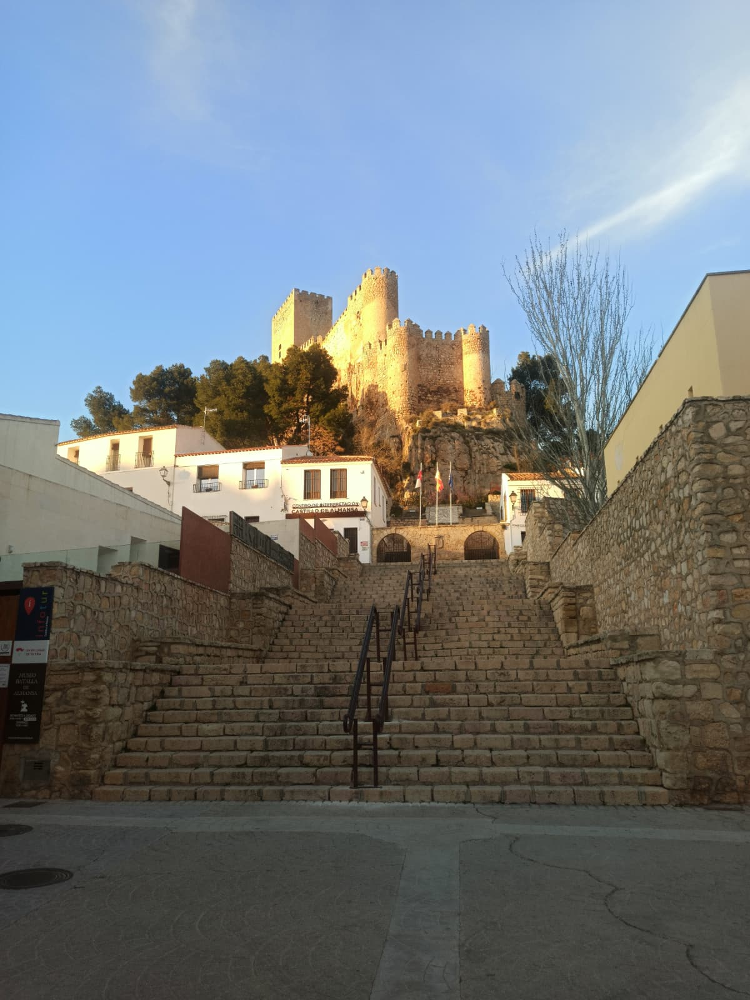
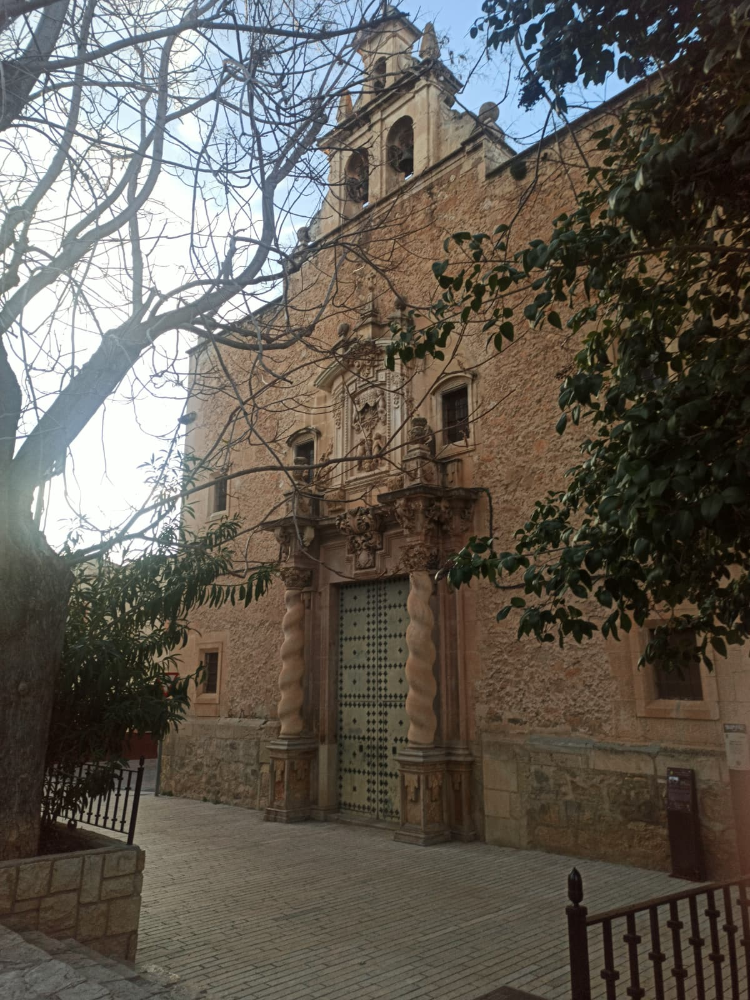

La oscuridad del castillo
Una sombra ha tomado el control de los muertos y los ha devuelto a las calles como una amenaza imparable. Avanzas entre ruinas y silencios rotos, evitando a los infectados y a guardias que ya no confían en nadie, eligiendo entre esconderte, huir o negociar. Solo queda una esperanza: alcanzar con vida el Castillo de Almansa antes de que la oscuridad te reclame.
Año 1349. Almansa ya no es la villa que conocías. La peste negra ha quebrado calles y conciencias, y algo innombrable camina ahora entre los vivos, usando los cuerpos de los muertos como morada. La ciudad baja se consume entre el miedo, el humo y el silencio, donde cada esquina puede ser el final. Los pocos supervivientes se ocultan entre casas cerradas y plazas desiertas.


El Castillo de Almansa permanece en pie como el último bastión de orden, con sus puertas cerradas y sus muros vigilados día y noche. Guardias exhaustos y desconfiados controlan cada acceso; algunos aún obedecen al deber, otros solo entienden de oro o amenazas. Tu única opción es sobrevivir.
Avanzas por una ciudad rota, evitando a los infectados y el ojo vigilante de los hombres del castillo, eligiendo cuándo esconderte, cuándo huir y cuándo negociar. El tiempo se agota, y solo alcanzando la fortaleza antes de que caiga la noche podrás aspirar a ver un nuevo amanecer.
